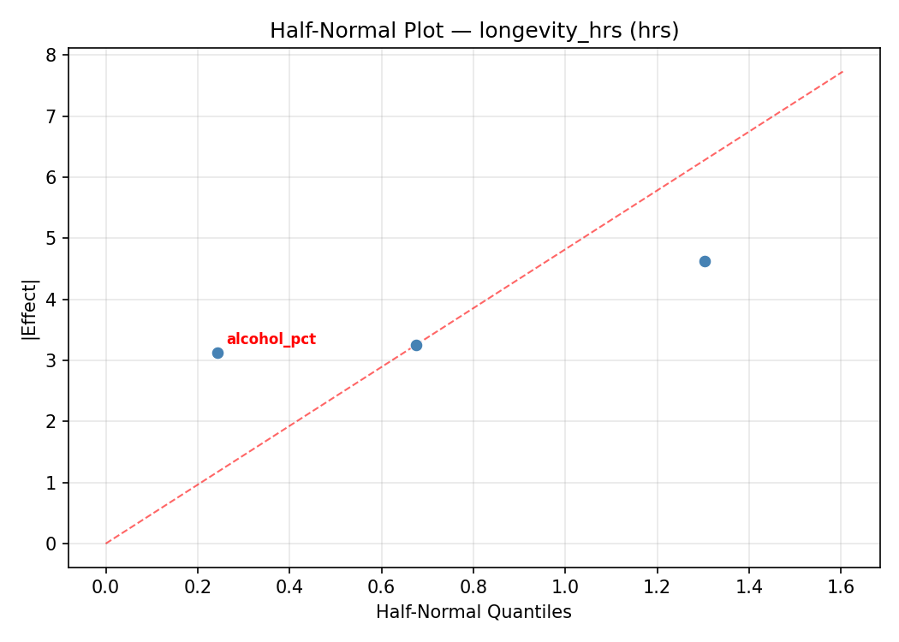
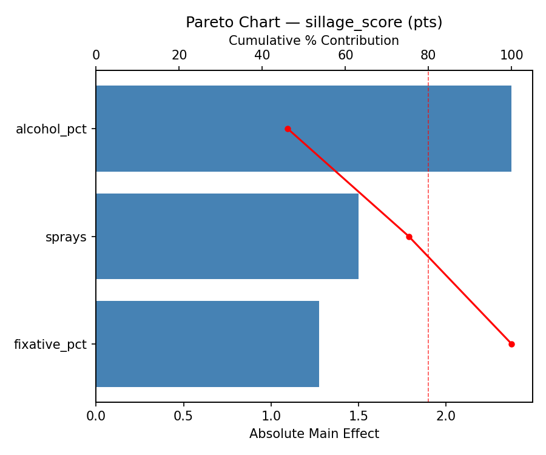
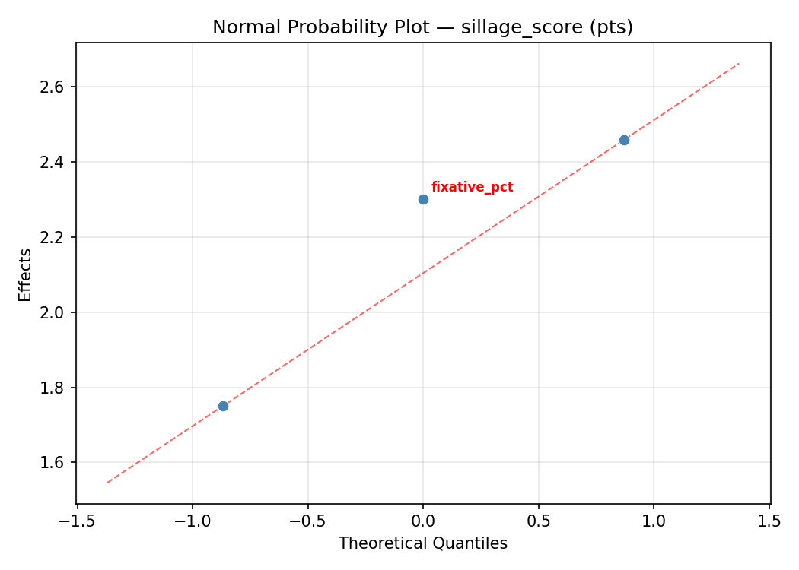
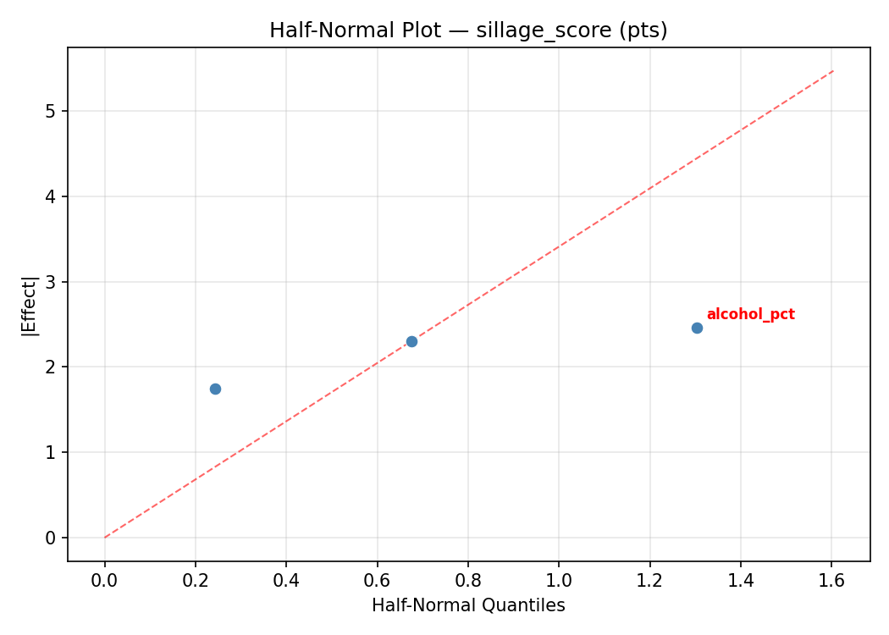
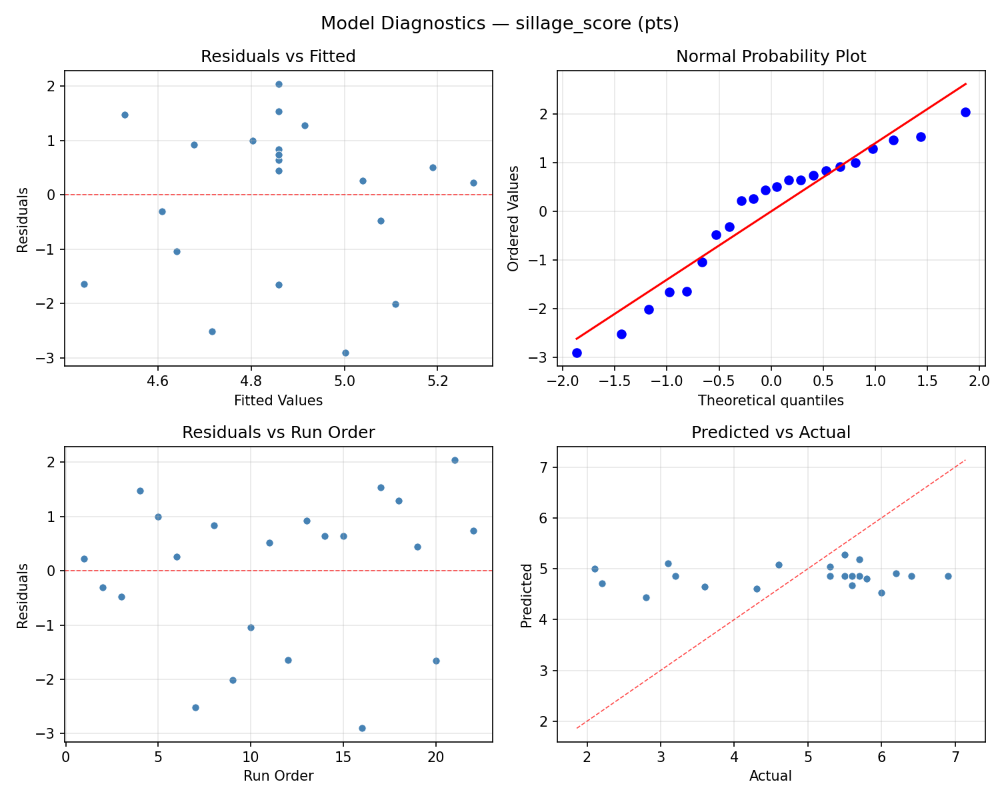
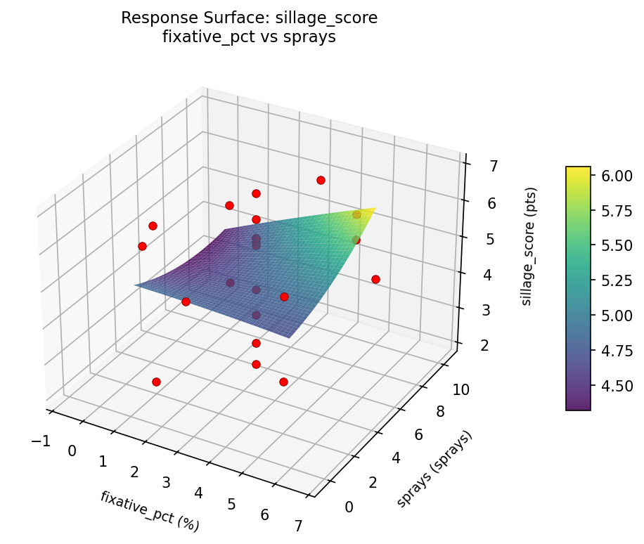

Summary
This experiment investigates perfume longevity & sillage. Central composite design to maximize scent longevity and sillage by tuning alcohol concentration, fixative percentage, and application amount.
The design varies 3 factors: alcohol pct (%), ranging from 60 to 85, fixative pct (%), ranging from 1 to 5, and sprays (sprays), ranging from 2 to 8. The goal is to optimize 2 responses: longevity hrs (hrs) (maximize) and sillage score (pts) (maximize). Fixed conditions held constant across all runs include fragrance type = eau_de_parfum, notes = oriental.
A Central Composite Design (CCD) was selected to fit a full quadratic response surface model, including curvature and interaction effects. With 3 factors this produces 22 runs including center points and axial (star) points that extend beyond the factorial range.
Quadratic response surface models were fitted to capture potential curvature and factor interactions. The RSM contour plots below visualize how pairs of factors jointly affect each response.
Key Findings
For longevity hrs, the most influential factors were fixative pct (37.7%), alcohol pct (36.6%), sprays (25.7%). The best observed value was 10.5 (at alcohol pct = 72.5, fixative pct = 3, sprays = 5).
For sillage score, the most influential factors were fixative pct (59.9%), alcohol pct (22.5%), sprays (17.6%). The best observed value was 6.9 (at alcohol pct = 72.5, fixative pct = 3, sprays = 5).
Recommended Next Steps
- Run confirmation experiments at the predicted optimal settings to validate the model.
- Consider whether any fixed factors should be varied in a future study.
Experimental Setup
Factors
| Factor | Low | High | Unit |
|---|
alcohol_pct | 60 | 85 | % |
fixative_pct | 1 | 5 | % |
sprays | 2 | 8 | sprays |
Fixed: fragrance_type = eau_de_parfum, notes = oriental
Responses
| Response | Direction | Unit |
|---|
longevity_hrs | ↑ maximize | hrs |
sillage_score | ↑ maximize | pts |
Configuration
{
"metadata": {
"name": "Perfume Longevity & Sillage",
"description": "Central composite design to maximize scent longevity and sillage by tuning alcohol concentration, fixative percentage, and application amount"
},
"factors": [
{
"name": "alcohol_pct",
"levels": [
"60",
"85"
],
"type": "continuous",
"unit": "%"
},
{
"name": "fixative_pct",
"levels": [
"1",
"5"
],
"type": "continuous",
"unit": "%"
},
{
"name": "sprays",
"levels": [
"2",
"8"
],
"type": "continuous",
"unit": "sprays"
}
],
"fixed_factors": {
"fragrance_type": "eau_de_parfum",
"notes": "oriental"
},
"responses": [
{
"name": "longevity_hrs",
"optimize": "maximize",
"unit": "hrs"
},
{
"name": "sillage_score",
"optimize": "maximize",
"unit": "pts"
}
],
"settings": {
"operation": "central_composite",
"test_script": "use_cases/224_perfume_longevity/sim.sh"
}
}
Experimental Matrix
The Central Composite Design produces 22 runs. Each row is one experiment with specific factor settings.
| Run | alcohol_pct | fixative_pct | sprays |
|---|
| 1 | 72.5 | 3 | 5 |
| 2 | 85 | 1 | 8 |
| 3 | 60 | 5 | 2 |
| 4 | 72.5 | 6.65148 | 5 |
| 5 | 72.5 | 3 | 5 |
| 6 | 49.6782 | 3 | 5 |
| 7 | 72.5 | 3 | -0.477226 |
| 8 | 72.5 | 3 | 5 |
| 9 | 85 | 5 | 2 |
| 10 | 95.3218 | 3 | 5 |
| 11 | 72.5 | 3 | 5 |
| 12 | 72.5 | -0.651484 | 5 |
| 13 | 72.5 | 3 | 5 |
| 14 | 60 | 1 | 8 |
| 15 | 72.5 | 3 | 5 |
| 16 | 85 | 1 | 2 |
| 17 | 72.5 | 3 | 10.4772 |
| 18 | 85 | 5 | 8 |
| 19 | 72.5 | 3 | 5 |
| 20 | 60 | 1 | 2 |
| 21 | 60 | 5 | 8 |
| 22 | 72.5 | 3 | 5 |
Step-by-Step Workflow
1
Preview the design
$ doe info --config use_cases/224_perfume_longevity/config.json
2
Generate the runner script
$ doe generate --config use_cases/224_perfume_longevity/config.json \
--output use_cases/224_perfume_longevity/results/run.sh --seed 42
3
Execute the experiments
$ bash use_cases/224_perfume_longevity/results/run.sh
4
Analyze results
$ doe analyze --config use_cases/224_perfume_longevity/config.json
5
Get optimization recommendations
$ doe optimize --config use_cases/224_perfume_longevity/config.json
6
Multi-objective optimization
With 2 competing responses, use --multi to find the best compromise via Derringer–Suich desirability.
$ doe optimize --config use_cases/224_perfume_longevity/config.json --multi
7
Generate the HTML report
$ doe report --config use_cases/224_perfume_longevity/config.json \
--output use_cases/224_perfume_longevity/results/report.html
Features Exercised
| Feature | Value |
|---|
| Design type | central_composite |
| Factor types | continuous (all 3) |
| Arg style | double-dash |
| Responses | 2 (longevity_hrs ↑, sillage_score ↑) |
| Total runs | 22 |
Analysis Results
Generated from actual experiment runs using the DOE Helper Tool.
Response: longevity_hrs
Top factors: fixative_pct (37.7%), alcohol_pct (36.6%), sprays (25.7%).
ANOVA
| Source | DF | SS | MS | F | p-value |
|---|
| Source | DF | SS | MS | F | p-value |
| alcohol_pct | 4 | 15.9270 | 3.9817 | 0.671 | 0.6282 |
| fixative_pct | 4 | 14.1395 | 3.5349 | 0.596 | 0.6747 |
| sprays | 4 | 6.0936 | 1.5234 | 0.257 | 0.8983 |
| Lack | of | Fit | 2 | 31.2486 | 15.6243 |
| Pure | Error | 7 | 41.5150 | | |
| Error | 9 | 72.7636 | 5.9307 | | |
| Total | 21 | 108.9236 | 5.1868 | | |
Pareto Chart

Main Effects Plot

Normal Probability Plot of Effects

Half-Normal Plot of Effects

Model Diagnostics

Response: sillage_score
Top factors: fixative_pct (59.9%), alcohol_pct (22.5%), sprays (17.6%).
ANOVA
| Source | DF | SS | MS | F | p-value |
|---|
| Source | DF | SS | MS | F | p-value |
| alcohol_pct | 4 | 5.3232 | 1.3308 | 0.613 | 0.6643 |
| fixative_pct | 4 | 8.9157 | 2.2289 | 1.026 | 0.4443 |
| sprays | 4 | 1.3357 | 0.3339 | 0.154 | 0.9565 |
| Lack | of | Fit | 2 | 10.6099 | 5.3049 |
| Pure | Error | 7 | 15.2088 | | |
| Error | 9 | 25.8186 | 2.1727 | | |
| Total | 21 | 41.3932 | 1.9711 | | |
Pareto Chart

Main Effects Plot

Normal Probability Plot of Effects

Half-Normal Plot of Effects

Model Diagnostics

Response Surface Plots
3D surfaces fitted with quadratic RSM. Red dots are observed data points.
longevity hrs alcohol pct vs fixative pct

longevity hrs alcohol pct vs sprays

longevity hrs fixative pct vs sprays

sillage score alcohol pct vs fixative pct

sillage score alcohol pct vs sprays

sillage score fixative pct vs sprays

Multi-Objective Optimization
When responses compete, Derringer–Suich desirability finds the best compromise.
Each response is scaled to a 0–1 desirability, then combined via a weighted geometric mean.
Overall Desirability
D = 0.9545
Per-Response Desirability
| Response | Weight | Desirability | Predicted | Dir |
|---|
longevity_hrs |
1.0 |
|
10.50 0.9545 10.50 hrs |
↑ |
sillage_score |
1.5 |
|
6.90 0.9545 6.90 pts |
↑ |
Recommended Settings
| Factor | Value |
|---|
alcohol_pct | 72.5 % |
fixative_pct | 3 % |
sprays | 5 sprays |
Source: from observed run #21
Trade-off Summary
Sacrifice = how much worse than single-objective best.
| Response | Predicted | Best Observed | Sacrifice |
|---|
sillage_score | 6.90 | 6.90 | +0.00 |
Top 3 Runs by Desirability
| Run | D | Factor Settings |
|---|
| #17 | 0.8085 | alcohol_pct=72.5, fixative_pct=3, sprays=5 |
| #18 | 0.7869 | alcohol_pct=72.5, fixative_pct=3, sprays=-0.477226 |
Model Quality
| Response | R² | Type |
|---|
sillage_score | 0.1757 | linear |
Full Multi-Objective Output
============================================================
MULTI-OBJECTIVE OPTIMIZATION
Method: Derringer-Suich Desirability Function
============================================================
Overall desirability: D = 0.9545
Response Weight Desirability Predicted Direction
---------------------------------------------------------------------
longevity_hrs 1.0 0.9545 10.50 hrs ↑
sillage_score 1.5 0.9545 6.90 pts ↑
Recommended settings:
alcohol_pct = 72.5 %
fixative_pct = 3 %
sprays = 5 sprays
(from observed run #21)
Trade-off summary:
longevity_hrs: 10.50 (best observed: 10.50, sacrifice: +0.00)
sillage_score: 6.90 (best observed: 6.90, sacrifice: +0.00)
Model quality:
longevity_hrs: R² = 0.0804 (linear)
sillage_score: R² = 0.1757 (linear)
Top 3 observed runs by overall desirability:
1. Run #21 (D=0.9545): alcohol_pct=72.5, fixative_pct=3, sprays=5
2. Run #17 (D=0.8085): alcohol_pct=72.5, fixative_pct=3, sprays=5
3. Run #18 (D=0.7869): alcohol_pct=72.5, fixative_pct=3, sprays=-0.477226
Full Analysis Output
=== Main Effects: longevity_hrs ===
Factor Effect Std Error % Contribution
--------------------------------------------------------------
fixative_pct 3.9250 0.4856 37.7%
alcohol_pct 3.8083 0.4856 36.6%
sprays 2.6750 0.4856 25.7%
=== ANOVA Table: longevity_hrs ===
Source DF SS MS F p-value
-----------------------------------------------------------------------------
alcohol_pct 4 15.9270 3.9817 0.671 0.6282
fixative_pct 4 14.1395 3.5349 0.596 0.6747
sprays 4 6.0936 1.5234 0.257 0.8983
Lack of Fit 2 31.2486 15.6243 2.634 0.1403
Pure Error 7 41.5150 5.9307
Error 9 72.7636 5.9307
Total 21 108.9236 5.1868
=== Summary Statistics: longevity_hrs ===
alcohol_pct:
Level N Mean Std Min Max
------------------------------------------------------------
49.6782 1 9.1000 0.0000 9.1000 9.1000
60 4 6.4750 0.9069 5.8000 7.8000
72.5 12 5.2917 2.1471 1.3000 8.3000
85 4 5.9000 3.6433 1.6000 10.5000
95.3218 1 6.1000 0.0000 6.1000 6.1000
fixative_pct:
Level N Mean Std Min Max
------------------------------------------------------------
-0.651484 1 3.1000 0.0000 3.1000 3.1000
1 4 7.0250 2.3400 5.5000 10.5000
3 12 5.8333 2.2853 1.3000 9.1000
5 4 5.3500 2.6401 1.6000 7.8000
6.65148 1 5.6000 0.0000 5.6000 5.6000
sprays:
Level N Mean Std Min Max
------------------------------------------------------------
-0.477226 1 3.6000 0.0000 3.6000 3.6000
10.4772 1 5.8000 0.0000 5.8000 5.8000
2 4 6.2750 1.0372 5.5000 7.8000
5 12 5.7750 2.3344 1.3000 9.1000
8 4 6.1000 3.6359 1.6000 10.5000
=== Main Effects: sillage_score ===
Factor Effect Std Error % Contribution
--------------------------------------------------------------
fixative_pct 3.4000 0.2993 59.9%
alcohol_pct 1.2750 0.2993 22.5%
sprays 1.0000 0.2993 17.6%
=== ANOVA Table: sillage_score ===
Source DF SS MS F p-value
-----------------------------------------------------------------------------
alcohol_pct 4 5.3232 1.3308 0.613 0.6643
fixative_pct 4 8.9157 2.2289 1.026 0.4443
sprays 4 1.3357 0.3339 0.154 0.9565
Lack of Fit 2 10.6099 5.3049 2.442 0.1569
Pure Error 7 15.2088 2.1727
Error 9 25.8186 2.1727
Total 21 41.3932 1.9711
=== Summary Statistics: sillage_score ===
alcohol_pct:
Level N Mean Std Min Max
------------------------------------------------------------
49.6782 1 5.3000 0.0000 5.3000 5.3000
60 4 5.7000 0.2160 5.5000 6.0000
72.5 12 4.5750 1.4334 2.2000 6.4000
85 4 4.5250 2.1077 2.1000 6.9000
95.3218 1 5.8000 0.0000 5.8000 5.8000
fixative_pct:
Level N Mean Std Min Max
------------------------------------------------------------
-0.651484 1 2.2000 0.0000 2.2000 2.2000
1 4 5.4250 1.3647 3.6000 6.9000
3 12 4.8500 1.2443 2.8000 6.4000
5 4 4.8000 1.8129 2.1000 6.0000
6.65148 1 5.6000 0.0000 5.6000 5.6000
sprays:
Level N Mean Std Min Max
------------------------------------------------------------
-0.477226 1 4.3000 0.0000 4.3000 4.3000
10.4772 1 5.3000 0.0000 5.3000 5.3000
2 4 5.1500 1.0599 3.6000 6.0000
5 12 4.7000 1.4722 2.2000 6.4000
8 4 5.0750 2.0694 2.1000 6.9000
Optimization Recommendations
=== Optimization: longevity_hrs ===
Direction: maximize
Best observed run: #21
alcohol_pct = 72.5
fixative_pct = 3
sprays = 5
Value: 10.5
RSM Model (linear, R² = 0.2120, Adj R² = 0.0807):
Coefficients:
intercept +5.8273
alcohol_pct -0.1630
fixative_pct -1.1702
sprays +0.4227
RSM Model (quadratic, R² = 0.6231, Adj R² = 0.3404):
Coefficients:
intercept +7.0431
alcohol_pct -0.1630
fixative_pct -1.1702
sprays +0.4227
alcohol_pct*fixative_pct -0.0250
alcohol_pct*sprays -1.7000
fixative_pct*sprays -0.5750
alcohol_pct^2 -0.6979
fixative_pct^2 -0.5479
sprays^2 -0.5779
Curvature analysis:
alcohol_pct coef=-0.6979 concave (has a maximum)
sprays coef=-0.5779 concave (has a maximum)
fixative_pct coef=-0.5479 concave (has a maximum)
Notable interactions:
alcohol_pct*sprays coef=-1.7000 (antagonistic)
fixative_pct*sprays coef=-0.5750 (antagonistic)
Predicted optimum (from quadratic model, at observed points):
alcohol_pct = 60
fixative_pct = 1
sprays = 8
Predicted value: 9.2254
Surface optimum (via L-BFGS-B, quadratic model):
alcohol_pct = 60
fixative_pct = 1
sprays = 8
Predicted value: 9.2254
Model quality: Moderate fit — use predictions directionally, not precisely.
Factor importance:
1. fixative_pct (effect: 4.8, contribution: 50.0%)
2. sprays (effect: 2.7, contribution: 28.6%)
3. alcohol_pct (effect: 2.1, contribution: 21.4%)
=== Optimization: sillage_score ===
Direction: maximize
Best observed run: #21
alcohol_pct = 72.5
fixative_pct = 3
sprays = 5
Value: 6.9
RSM Model (linear, R² = 0.2733, Adj R² = 0.1521):
Coefficients:
intercept +4.8591
alcohol_pct -0.3056
fixative_pct -0.7621
sprays +0.3116
RSM Model (quadratic, R² = 0.7540, Adj R² = 0.5696):
Coefficients:
intercept +5.4920
alcohol_pct -0.3056
fixative_pct -0.7621
sprays +0.3116
alcohol_pct*fixative_pct -0.6375
alcohol_pct*sprays -1.0625
fixative_pct*sprays -0.3625
alcohol_pct^2 -0.4764
fixative_pct^2 -0.3564
sprays^2 -0.1164
Curvature analysis:
alcohol_pct coef=-0.4764 concave (has a maximum)
fixative_pct coef=-0.3564 concave (has a maximum)
sprays coef=-0.1164 concave (has a maximum)
Notable interactions:
alcohol_pct*sprays coef=-1.0625 (antagonistic)
alcohol_pct*fixative_pct coef=-0.6375 (antagonistic)
fixative_pct*sprays coef=-0.3625 (antagonistic)
Predicted optimum (from quadratic model, at observed points):
alcohol_pct = 60
fixative_pct = 1
sprays = 8
Predicted value: 6.7094
Surface optimum (via L-BFGS-B, quadratic model):
alcohol_pct = 60.6657
fixative_pct = 1.53826
sprays = 8
Predicted value: 6.7457
Model quality: Good fit — general trends are captured, some noise remains.
Factor importance:
1. fixative_pct (effect: 3.0, contribution: 39.7%)
2. alcohol_pct (effect: 2.4, contribution: 31.8%)
3. sprays (effect: 2.2, contribution: 28.5%)